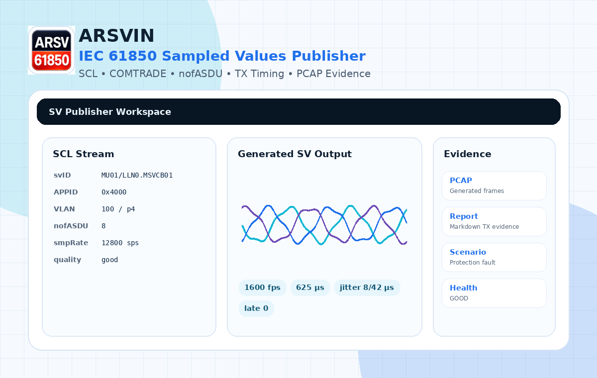

SCL-driven stream setup
Load SCL/SCD data and reuse APPID, destination MAC, VLAN, svID, dataset, confRev, smpRate, smpMod, and nofASDU.
 ARSVIN
ARSVIN
Apache-2.0 · Windows · IEC 61850 lab publishing
Publish SCL-driven SV streams, replay COMTRADE analog records, test nofASDU frame packing, monitor TX timing health, and export generated PCAP/report evidence in isolated lab setups.
Publisher-focused. Not a certified relay test set, calibrated merging unit, process-bus analyzer, or production tool.

Focused publisher workflow
ARSVIN stays intentionally narrow: configure the publisher, generate the SV stream, expose TX health, and export evidence for independent inspection.
Load SCL/SCD data and reuse APPID, destination MAC, VLAN, svID, dataset, confRev, smpRate, smpMod, and nofASDU.
Publish lab-oriented SV streams with nofASDU=1/2/4/8, sequential per-ASDU sample counters, and frame-rate calculation.
Replay analog records as Sampled Values for controlled relay readability checks and transient-style lab experiments.
Use repeatable state presets such as 3P fault, A-G fault, B-C fault, negative/zero sequence, VT fuse fail, CT saturation, harmonic injection, DC offset, frequency steps, phase jump, and load reversal.
Track target FPS, actual FPS, jitter, late frames, missed schedule count, send duration, and overall publisher health.
Review stream settings and warnings before live TX. ARSVIN makes scope and risk visible instead of hiding them.
Publisher evidence
ARSVIN does not claim live subscriber confirmation. Instead, it exports TX-side evidence: generated PCAP frames and Markdown reports containing stream settings, preflight findings, quality mode, scenario metadata, and timing health.
Generated SV frames for Wireshark/offline inspection.
Markdown evidence for APPID, VLAN, nofASDU, sample rate, bandwidth, quality, and timing.
GOOD/WARN/BAD TX status from publisher scheduling metrics.
Profile support
| Area | Support | Boundary |
|---|---|---|
| IEC 61850 Sampled Values APDU | Lab publisher implementation | Not a certified conformance test set. |
| 9-2LE style 4I+4V | Supported as lab profile | Use independent tools for formal validation. |
| nofASDU | 1 / 2 / 4 / 8 | Frame packing, sample-counter, and timing visibility are publisher-side. |
| PTP / smpSynch | Compatibility/lab mode | Not a certified IEC 61850-9-3 clock implementation. |
| Subscribers | Not live-detected | SV is multicast and unacknowledged. |
Fast start
FAQ
No. ARSVIN is a Sampled Values publisher. Use Wireshark, StationScout, IEDScout, relay vendor tools, or dedicated analyzers for live network analysis.
No. SV traffic is multicast and unacknowledged. A publisher cannot confirm live reception by itself. Subscriber expectations must come from complete SCL/SCD engineering data or external tools.
ARSVIN supports lab-oriented 9-2LE style 4I+4V workflows and nofASDU publishing. It is not a certified 9-2LE conformance test set.
Yes for live raw Ethernet publishing on Windows. Dry-run and configuration workflows can be used without live packet transmission.
Get ARSVIN
Download the latest win-x64 portable package, or build from source with .NET 8.